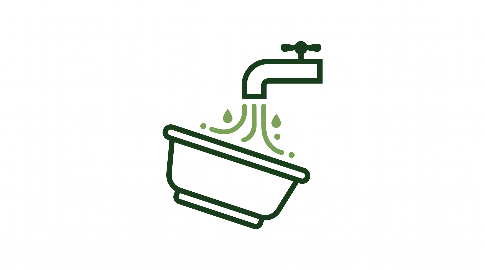
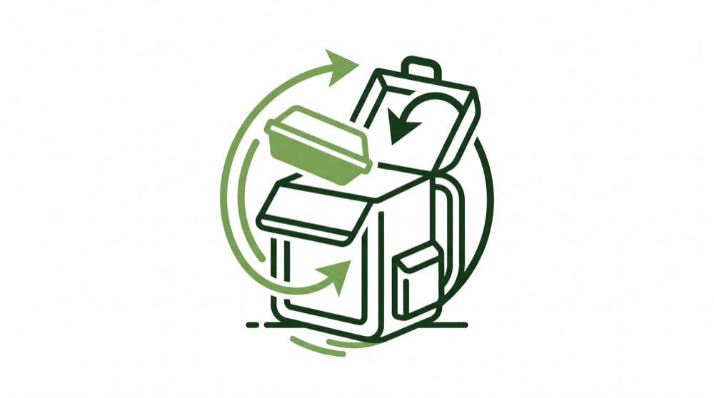
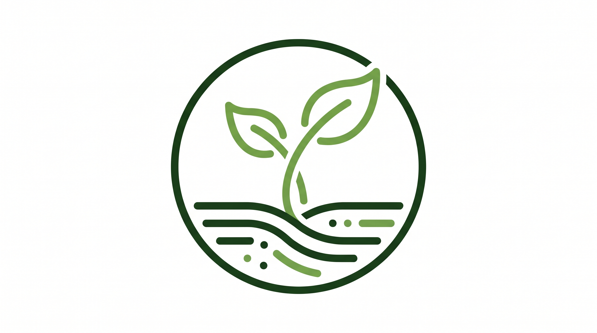
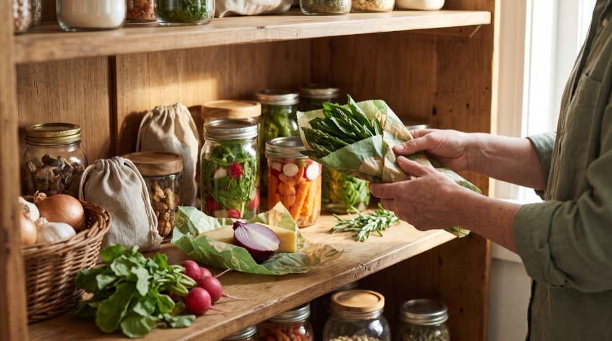

Sustentabilidade
Pequenas escolhas geram grandes impactos: como cuidamos da terra em cada etapa da nossa operação.
O Nosso Compromisso Sustentável
A sustentabilidade na BioMarmita não é uma palavra de moda: é o princípio que guia todas as nossas decisões logísticas e de confecção.
Bioplástico Certificado EN 13432
Recipientes confecionados com amido vegetal renovável, 100% livres de polímeros derivados de petróleo e certificados para compostagem industrial conforme a norma europeia EN 13432.
Desperdício Alimentar Zero
Produção calibrada com base em subscrições confirmadas com 48 horas de antecedência à entrega. Os excedentes vegetais da preparação são imediatamente encaminhados para compostagem orgânica.
Circuito Curto (< 50 km)
Todos os hortícolas e frutas são colhidos a menos de 50 km do centro de confeção no Porto, reduzindo em 74% as emissões de CO₂ face a refeições convencionais de distribuição nacional.
Como Funciona a Devolução e Compostagem
A devolução não é obrigatória, mas sim um incentivo ativo à sustentabilidade circular: recolhemos gratuitamente as suas embalagens vazias ou pode compostá-las em casa.

1. Lave a Embalagem
Depois de saborear a sua marmita, passe o recipiente por água corrente rápida para retirar resíduos alimentares superficiais.

2. Devolva (Incentivo Opcional)
Se desejar participar no ciclo circular, guarde os recipientes limpos dentro da caixa térmica da BioMarmita para recolha gratuita pelo nosso estafeta, ou coloque-os no seu compostor doméstico.

3. Dê Uma Nova Vida
Nós encaminhamos os bioplásticos para compostagem industrial especializada, transformando-os em composto orgânico fértil para a terra.

Selagem a Vácuo: Frescura Sem Químicos
As nossas marmitas são seladas com tecnologia hermética a vácuo logo após a confeção a baixa temperatura. Este processo natural retira o oxigénio, impedindo a oxidação e a proliferação bacteriana sem precisar de qualquer conservante artificial.
O resultado são pratos que se mantêm tão saborosos, húmidos e seguros no 7º dia no frigorífico como no momento em que saíram do fogão.
Tirar Dúvidas sobre ConservaçãoCertificações & Selos de Confiança
Cada refeição que chega a sua casa é respaldada por normas europeias e auditorias independentes de produção biológica, segurança alimentar e biodegradabilidade.

Euro-Folha (União Europeia)
Regulamento (UE) 2018/848 • PT-BIO-XXO logótipo biológico oficial da União Europeia garante que pelo menos 95% dos ingredientes agrícolas são provenientes de agricultura biológica certificada, sujeita a auditorias anuais e análises laboratoriais aos solos e colheitas.
- ✓ Zero pesticidas de síntese: Livres de glifosato, fungicidas e inseticidas químicos.
- ✓ Isenção total de OGM: Sementes e grãos não modificados geneticamente.
- ✓ Bem-estar animal: Aves e gado criados ao ar livre e alimentados exclusivamente com pasto e rações biológicas.
- ✓ Fertilidade viva do solo: Rotação regular de culturas e adubação orgânica natural.

HACCP & Higiene Alimentar
Codex Alimentarius • Regulamento (CE) 852/2004Sistema preventivo de Análise de Perigos e Controlo de Pontos Críticos implementado na nossa cozinha profissional no Porto, assegurando os mais elevados padrões de assepsia e segurança microbiológica.
- ✓ Arrefecimento Ultra-rápido (Blast Chilling): Redução de temperatura de 70 °C para 3 °C em menos de 90 minutos.
- ✓ Cadeia de Frio Vigiada: Transporte em veículos isotérmicos com registo térmico contínuo.
- ✓ Rastreabilidade Lote a Lote: Controlo documental rigoroso desde a colheita até ao cliente final.
- ✓ Higienização e Assepsia Hospitalar: Desinfeção diária com protocolos laboratoriais validados.

Norma Europeia EN 13432
Certificação TÜV Austria • OK CompostCertificação técnica para recipientes e películas bioplásticas derivadas de amido de milho e cana-de-açúcar, atestando a sua compostabilidade total e inocuidade ecotoxicológica para os solos.
- ✓ 100% Biodegradável em 90 dias: Decomposição integral em composto fértil sob condições industriais.
- ✓ Sem Polímeros Fósseis: Zero petróleo, ftalatos ou bisfenol-A (BPA).
- ✓ Zero Microplásticos: Regresso à terra sem libertar partículas químicas sintéticas.
- ✓ Inocuidade Ecotoxicológica: Isenção total de metais pesados prejudiciais ao solo e plantas.

Cadeia Curta & Clean Label
Origem Regional (< 60 km) • Sem ConservantesCompromisso público de aquisição direta a produtores familiares do Entre Douro e Minho, aliado a uma confeção limpa sem recurso a qualquer aditivo artificial de conservação ou sabor.
- ✓ Zero Aditivos Químicos: Sem conservantes (E200-E299), sem corantes artificiais e sem glutamato.
- ✓ Conservação 100% Natural a Vácuo: Selagem hermética que preserva aroma e sabor até 7 dias no frio.
- ✓ Economia Rural do Norte: Remuneração justa e apoio direto às quintas da nossa região.
- ✓ Transparência de Origem: Identificação clara da quinta produtora e lote em cada marmita.